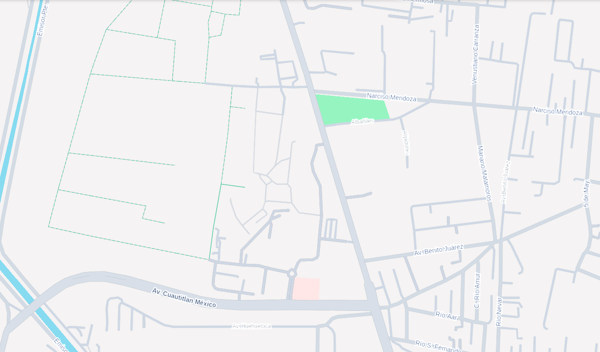

Bienvenido a Axotlacuali
Explora las instalaciones de la FES Cuautitlán Campo 4 con nuestro recorrido virtual y descubre los mejores lugares para comer cerca del campus.
Mapa Virtual
Explora Nuestro Campus
Sumérgete en un recorrido virtual completo por todas las instalaciones de nuestra universidad. Desde los edificios mas emblematicos hasta nuestros laboratorios y espacios deportivos.
Explorar Mapa
